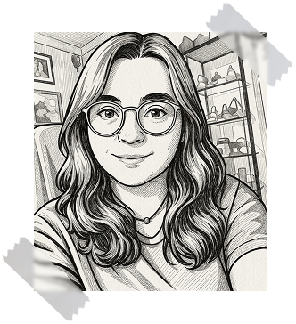

Sobre mi
Soy Marta, diseñadora Gráfica especializada en productos Editoriales y Multimedia. Mi enfoque combina la estética visual con la funcionalidad, transformando conceptos abstractos en interfaces intuitivas que cautivan al usuario. Mi trayectoria se define por una mentalidad de crecimiento constante, soy una profesional autodidacta y curiosa, siempre a la vanguardia de nuevas metodologías
- Diseño Editorial
- Packaging
- Diseño de publicidad
- Preparación para impresión
- Redes sociales
- Diseño Web
- Diseño y desarrollo de contenido e-learning